คู่มือปฏิบัติงาน — สังกัด / เขตพื้นที่
ระบบรถรับส่งนักเรียนจังหวัดลำปาง — https://schoolbuslampang.com เวอร์ชัน Phase 10.13C • อัปเดต 2026-06-24 • ปรับปรุงล่าสุด 2026-09-06 (ตรวจกับระบบจริง commit 14caf5b)
📷 หมายเหตุภาพหน้าจอ: ข้อมูลส่วนบุคคล (ชื่อนักเรียน/ผู้ปกครอง เบอร์โทร) ในภาพถูกเบลอเพื่อความเป็นส่วนตัว — เมื่อใช้งานจริงจะแสดงข้อมูลตามปกติ
ภาพรวม 30 วินาที
- บทบาทนี้ทำอะไรได้:
- ดูภาพรวม (Dashboard) ของทุกโรงเรียนในสังกัด และดูรายชื่อโรงเรียน/นักเรียน/รถรับส่ง (อ่านอย่างเดียว)
- ดูสถานะการรับ-ส่งวันนี้ ตำแหน่งรถแบบ live และแผนที่จุดรับส่ง (แบบรวม ไม่มีข้อมูลส่วนบุคคล)
- ดูเหตุฉุกเฉิน และประวัติการแก้ไข (audit log) ในสังกัด
- เพิ่มโรงเรียนใหม่ + สร้างบัญชีให้โรงเรียน (ทีละแห่ง และนำเข้าจาก Excel)
- กดแจ้งเตือนโรงเรียนที่มีข้อมูลค้าง (คัดลอกข้อความไปส่งเอง)
- ดูและส่งออกรายงาน รายวัน/รายเดือน/สรุป (CSV / Excel / PDF)
- เข้าระบบด้วย: ชื่อผู้ใช้ของบัญชีสังกัดที่ admin/ส่วนกลางสร้างให้ — สมัครเองไม่ได้ บัญชีผูกกับรหัสสังกัดของหน่วยงานท่าน (เช่น
AFF001) และเห็นเฉพาะข้อมูลของสังกัดนั้น - อุปกรณ์ที่แนะนำ: คอมพิวเตอร์ (desktop) เป็นหลัก — เห็นเมนูครบในแถบด้านข้าง เหมาะกับดูตาราง/รายงาน/จัดการบัญชี ; มือถือใช้ได้ มีแถบล่าง 4 แท็บ (หน้าแรก / โรงเรียน / ตำแหน่ง / รายงาน)
💡 บัญชีสังกัดเป็นบัญชีสำหรับ กำกับดูแล (oversight) — ดูข้อมูลและกำกับเป็นหลัก ไม่ได้ทำงานหน้างาน (เช็กชื่อ/แก้ข้อมูลนักเรียน เป็นหน้าที่ของคนขับ/โรงเรียน)
สารบัญงาน
| # | งาน | ใช้เมื่อ |
|---|---|---|
| 1 | เข้าสู่ระบบ | ทุกครั้งที่เริ่มใช้งาน |
| 2 | เปลี่ยนรหัสผ่านครั้งแรก | บัญชียังใช้รหัสตั้งต้น |
| 3 | ดูภาพรวมเขต + แจ้งเตือนโรงเรียนค้างข้อมูล | งานประจำวัน |
| 4 | ดูโรงเรียนในสังกัด | ดูภาพรวมรายโรงเรียน |
| 5 | ค้นหาข้อมูลนักเรียน | หานักเรียนในสังกัด |
| 6 | ดูรถรับส่ง | ตรวจข้อมูลรถ/ความปลอดภัย |
| 7 | ดูสถานะวันนี้ (ไม่มีในเมนู) | ดูรับ-ส่งแยกโรงเรียน→รถ→นักเรียน |
| 8 | ดูตำแหน่งรถ live | ติดตามรถระหว่างวิ่ง |
| 9 | ดูแผนที่จุดรับส่ง | ดูภาพรวมจุดรับ-ส่ง |
| 10 | ดูเหตุฉุกเฉิน | ตรวจเหตุที่แจ้งจากรถ |
| 11 | ดูประวัติการแก้ไข (audit log) | ตรวจสอบ/ส่งออก CSV |
| 12 | เพิ่มโรงเรียนใหม่ + จัดการบัญชีโรงเรียน | เปิดบัญชีให้โรงเรียน |
| 13 | รายงานและส่งออก | ทำรายงาน/ดาวน์โหลดไฟล์ |
| 13B | อนุมัติคำขอโอนย้ายนักเรียน | โรงเรียนในสังกัดยื่นย้ายนักเรียน |
| 13C | อนุมัติคำขอเกี่ยวกับรถ | โรงเรียนขอกู้คืนรถ/ใช้รถร่วม/เพิ่มรถ/ตรวจสอบรถซ้ำ |
| 14 | ออกจากระบบ | เลิกใช้งาน |
งานที่ 1 — เข้าสู่ระบบ
ใช้เมื่อ: เริ่มใช้งานระบบ
ขั้นตอน:
- เปิดเบราว์เซอร์ไปที่ https://schoolbuslampang.com → ระบบพาไปหน้าเข้าสู่ระบบ
- กรอกที่ช่อง "ชื่อผู้ใช้หรือทะเบียนรถ" ด้วยชื่อผู้ใช้ของบัญชีสังกัดที่ได้รับมาจากผู้ดูแลระบบ — ข้อความจาง ๆ ในช่องว่า "เช่น school001 หรือ กข-1234" เป็นเพียงตัวอย่าง ไม่ต้องพิมพ์ตาม
- กรอก รหัสผ่าน ที่ได้รับจากผู้ดูแลระบบ (คู่มือฉบับนี้เผยแพร่สาธารณะ จึงไม่ระบุรหัสตั้งต้นไว้ — ถ้ายังไม่ได้รับหรือจำไม่ได้ ให้ติดต่อผู้ดูแลระบบระดับจังหวัด)
- กด เข้าสู่ระบบ

ภาพ: หน้าเข้าสู่ระบบ (เดสก์ท็อป)

ภาพ: หน้าเข้าสู่ระบบ (มือถือ)
✅ ผลลัพธ์ที่ถูกต้อง: เข้าสู่หน้า ภาพรวมสังกัด (Dashboard) ได้ (ถ้ายังใช้รหัสตั้งต้น ระบบจะพาไปหน้าเปลี่ยนรหัสก่อน — ดูงานที่ 2) ⚠️ ถ้าติดปัญหา:
- "ชื่อผู้ใช้หรือรหัสผ่านไม่ถูกต้อง" → ชื่อผู้ใช้หรือรหัสผ่านผิด
- "บัญชีนี้ถูกปิดการใช้งาน" → ขึ้นระหว่างใช้งาน ไม่ใช่ตอนกดเข้าสู่ระบบ แปลว่าบัญชีถูกปิดหลังเข้าระบบไปแล้ว ถ้าลองเข้าใหม่จะขึ้นว่า "ชื่อผู้ใช้หรือรหัสผ่านไม่ถูกต้อง" แทน — ติดต่อผู้ดูแลระบบ
- "มีการพยายามเข้าสู่ระบบหลายครั้งจากเครือข่ายนี้ … ลองใหม่อีกประมาณ 15 นาที" → พยายามถี่เกินไป (เช่น กรอกรหัสผ่านผิดซ้ำ 10 ครั้งใน 15 นาที) รอประมาณ 15 นาทีแล้วลองใหม่ — เป็นการระงับชั่วคราว บัญชีไม่ได้ถูกปิดถาวร
- "ไม่สามารถเชื่อมต่อระบบได้" → เครือข่ายมีปัญหา ลองใหม่อีกครั้ง
- รหัสตั้งต้นใช้ได้ครั้งแรกเท่านั้น จากนั้นระบบบังคับให้เปลี่ยน
- ลืมรหัส: หน้าเข้าสู่ระบบมีแถบ "ลืมรหัสผ่านหรือเข้าใช้งานไม่ได้" อยู่ใต้ปุ่มเข้าสู่ระบบ กดแล้วจะเห็นหัวข้อ "ช่องทางขอความช่วยเหลือ" ระบุว่า "ต้นสังกัด ขนส่ง และจังหวัด: ติดต่อผู้ดูแลระบบระดับจังหวัด" — ระบบยังไม่เปิดให้รีเซ็ตรหัสผ่านด้วยตัวเอง บัญชีสังกัดจึงตั้งรหัสใหม่ให้ตัวเองไม่ได้ ต้องติดต่อผู้ดูแลระบบ (admin) ให้รีเซ็ตให้
ℹ️ ระบบตรวจสอบสถานะบัญชีทุกครั้งที่ใช้งาน — ถ้าบัญชีถูกปิดระหว่างวัน จะถูกเด้งออกทันที ไม่ต้องรอเซสชันหมดอายุ
งานที่ 2 — เปลี่ยนรหัสผ่านครั้งแรก (บังคับ)
ใช้เมื่อ: บัญชียังใช้รหัสตั้งต้น — เข้าสู่ระบบครั้งแรกแล้วขึ้น "กรุณาเปลี่ยนรหัสผ่านเริ่มต้น"
ขั้นตอน:
- ระบบพาไปหน้า เปลี่ยนรหัสผ่าน อัตโนมัติ (จะใช้เมนูอื่นไม่ได้จนกว่าจะเปลี่ยนสำเร็จ — ถ้าลองใช้หน้าอื่นจะขึ้น "กรุณาเปลี่ยนรหัสผ่านก่อนใช้งานระบบ")
- กรอก "รหัสผ่านปัจจุบัน"
- กรอก "รหัสผ่านใหม่" (แสดงใต้ช่องกรอกว่า "อย่างน้อย 8 ตัวอักษร") — ต้องไม่ซ้ำกับรหัสผ่านเดิม ถ้าซ้ำจะขึ้นข้อความ "รหัสผ่านใหม่ต้องไม่ซ้ำกับรหัสผ่านเดิม"
- กรอก "ยืนยันรหัสผ่านใหม่" ให้ตรงกับช่องก่อนหน้า
- กดปุ่ม "เปลี่ยนรหัสผ่าน" ที่ล่างสุดของแบบฟอร์ม

ภาพ: หน้าเปลี่ยนรหัสผ่าน (บังคับเปลี่ยนครั้งแรก)
✅ ผลลัพธ์ที่ถูกต้อง: เปลี่ยนรหัสสำเร็จ เข้าใช้งานเมนูได้ตามปกติ ⚠️ ถ้าติดปัญหา: หลังเปลี่ยนรหัสสำเร็จ การเข้าสู่ระบบเดิมทุกอุปกรณ์จะหมดอายุทันที (ขึ้น "เซสชันหมดอายุจากการเปลี่ยนรหัสผ่าน") — เป็นเรื่องปกติ ให้เข้าสู่ระบบใหม่ด้วยรหัสใหม่
งานที่ 3 — ดูภาพรวมเขต + แจ้งเตือนโรงเรียนค้างข้อมูล
ใช้เมื่อ: งานประจำวัน — ดูสรุปทั้งสังกัดและกระตุ้นโรงเรียนที่มีข้อมูลค้าง
ขั้นตอน (ดูภาพรวม):
- เปิดเมนู "ภาพรวมสังกัด" (หน้าแรกหลังเข้าสู่ระบบ)
- ดู ปุ่มลัดด้านบน — "โรงเรียนในสังกัด" / "ตำแหน่งปัจจุบัน" / "รายงาน"
- ดู แถบสถานะ (Hero ribbon) ที่เปลี่ยนตามสถานการณ์ เช่น "ยังไม่เริ่มดำเนินการวันนี้" / "ทุกโรงเรียนในสังกัดดำเนินการครบ" หรือแผงเตือน 3 การ์ด ("โรงเรียนเสี่ยง" / "เหตุฉุกเฉินล่าสุด" / "รถสำคัญ")
- ดู 5 การ์ดสรุป: (1) "การใช้งานเช็กชื่อ" — โรงเรียนทั้งหมด / มีข้อมูลเช็กชื่อใน 14 วัน / ยังไม่มีข้อมูลเช็กชื่อ (2) "ความครบถ้วนข้อมูลรถ" — มีข้อมูลรถแล้ว / ข้อมูลไม่ครบ (3) "การรับ-ส่งวันนี้" — ส่งเช้า และ รับเย็น (เสร็จ/ทั้งหมด) (4) "โรงเรียนเสี่ยงวันนี้" — โรงเรียนที่ต้องติดตาม กดการ์ดเพื่อเลื่อนลงไปดูรายการ (5) "เหตุแจ้งเตือน" — เหตุฉุกเฉิน 7 วัน + นักเรียนลา
- ดู "สถานะโรงเรียนในสังกัด" — รายชื่อโรงเรียนทุกแห่งในสังกัด พร้อมบรรทัดสรุปด้านบน ("ครบ N โรงเรียน · มีข้อมูล X · เข้าระบบแล้วรอนำเข้า Y · ยังไม่เข้าใช้ Z") แต่ละแถวบอกชื่อโรงเรียน จำนวนนักเรียน จำนวนรถที่ผูกกับนักเรียน และเวลาที่เข้าระบบล่าสุด (ถ้าเคยเข้าใช้งาน) พร้อมป้ายสถานะ 1 ใน 3 แบบ: "มีข้อมูลนักเรียนแล้ว" (เขียว) / "เข้าสู่ระบบแล้ว รอนำเข้าข้อมูล" (เหลือง) / "ยังไม่เข้าใช้" (เทา) — กด "ดูรายละเอียด" มุมขวาของหัวข้อนี้ เพื่อไปหน้า "โรงเรียนในสังกัด"
- ดู "ภาพรวมเพิ่มเติม" — ขนาดสังกัด: นักเรียน/โรงเรียน/รถรับส่ง/รายละเอียดการลา (เช้า-เย็น)
- ดู "ผลการดำเนินการวันนี้" — กราฟวงแหวน (donut) 2 วง: "สถานะส่งเช้า" และ "สถานะรับเย็น" แต่ละวงแสดงเปอร์เซ็นต์ตรงกลางพร้อมบรรทัดสรุป (เช่น "ส่งแล้ว 120/300 คน" หรือ "รับแล้ว 120/300 คน") และมีตัวเลข ส่งแล้ว (หรือ รับแล้ว) / ลา / รอ อยู่ด้านล่าง ถ้ายังไม่เริ่มรอบจะขึ้น "–" กับ "รอเริ่มรอบ" ตรงกลาง และขึ้น "ยังไม่เริ่ม" ด้านล่าง
- ดู "โรงเรียนเสี่ยง" — การ์ดต่อโรงเรียน บอกระดับ "เสี่ยงสูง" (ค้างเกิน 50) / "เสี่ยงปานกลาง" (เกิน 20) / "เสี่ยงน้อย" พร้อมแถบความคืบหน้าส่งเช้า-รับเย็น และปุ่ม "แจ้งเตือน"
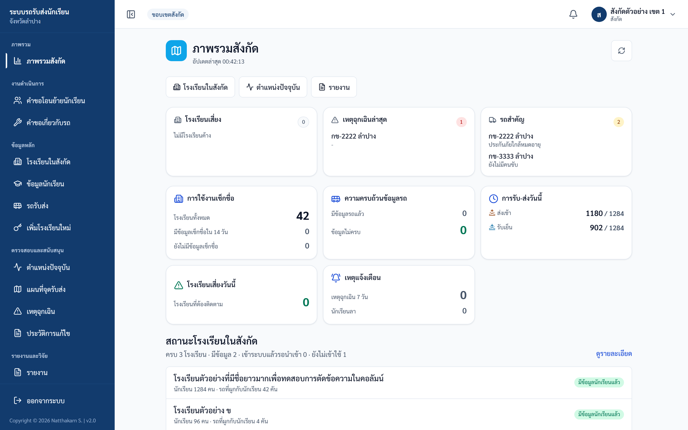
ภาพ: แดชบอร์ดเขต/สังกัด
ขั้นตอน (แจ้งเตือนโรงเรียนที่มีข้อมูลค้าง):
- เลื่อนไปที่ส่วน "โรงเรียนเสี่ยง" → หาโรงเรียนที่ต้องการ
- กดปุ่ม "แจ้งเตือน" บนการ์ดโรงเรียนนั้น
- ระบบคัดลอกข้อความสำเร็จรูป (เช่น "แจ้งเตือนจากสังกัด: โรงเรียน… ยังมีข้อมูลนักเรียนค้าง…") ไว้ในคลิปบอร์ด แล้วขึ้น toast "คัดลอกข้อความแล้ว — ส่งผ่าน LINE/โทรศัพท์ได้เลย" ปุ่มเปลี่ยนเป็น "แจ้งแล้ว HH:MM"
- นำข้อความที่คัดลอกไปส่งให้โรงเรียนเองทาง LINE หรือโทรศัพท์
✅ ผลลัพธ์ที่ถูกต้อง: เห็นสรุปภาพรวมครบ และปุ่มแจ้งเตือนเปลี่ยนเป็น "แจ้งแล้ว HH:MM" หลังกด ⚠️ ถ้าติดปัญหา:
- ปุ่ม "แจ้งเตือน" ไม่ได้ส่ง LINE/SMS อัตโนมัติ — ระบบเพียงคัดลอกข้อความและบันทึกประวัติ (audit log) คุณต้องเอาข้อความไปส่งเอง
- แจ้งเตือนได้เฉพาะโรงเรียนในสังกัดของคุณ — โรงเรียนนอกเขตจะขึ้น "ไม่สามารถแจ้งเตือนโรงเรียนนอกเขตพื้นที่ของท่านได้"
- ตัวเลขบนหน้านี้อัปเดตให้เองทุก ~30 วินาทีขณะเปิดหน้านี้ค้างไว้ และดึงข้อมูลใหม่ทันทีเมื่อสลับกลับมาที่หน้าจอนี้ — ถ้าไม่แน่ใจว่าข้อมูลใหม่หรือยัง ให้ดูบรรทัดเล็กใต้ชื่อหน้า ต่อจากวันที่ จะเขียนว่า "อัปเดตล่าสุด HH:MM:SS" หรือกด ปุ่มไอคอนวงกลมลูกศร มุมขวาบน (ชี้ค้างที่ปุ่มจะขึ้นคำว่า "รีเฟรชข้อมูลแดชบอร์ด") เพื่อดึงข้อมูลใหม่ทันที
งานที่ 4 — ดูโรงเรียนในสังกัด
ใช้เมื่อ: ดูภาพรวมรายโรงเรียน (จำนวนนักเรียน/รถ)
ขั้นตอน:
- เปิดเมนู "โรงเรียนในสังกัด"
- ดูการ์ดของแต่ละโรงเรียน — แต่ละการ์ดบอกจำนวนนักเรียนและจำนวนรถรับส่ง
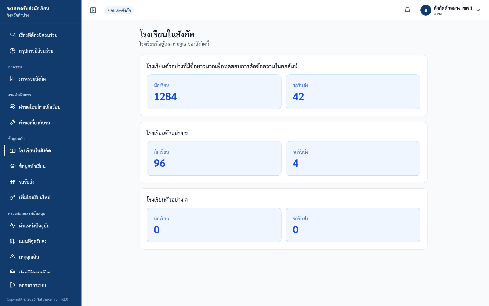
ภาพ: โรงเรียนในสังกัด
✅ ผลลัพธ์ที่ถูกต้อง: เห็นการ์ดทุกโรงเรียนในสังกัด ⚠️ ถ้าติดปัญหา: หน้านี้ไม่มีช่องค้นหา/ตัวกรอง — แสดงทุกโรงเรียนในสังกัด ถ้ายังไม่มีโรงเรียนจะขึ้น "ยังไม่มีโรงเรียนในสังกัด"
งานที่ 5 — ค้นหาข้อมูลนักเรียน
ใช้เมื่อ: หานักเรียนของทุกโรงเรียนในสังกัด
ขั้นตอน:
- เปิดเมนู "ข้อมูลนักเรียน"
- พิมพ์ในช่อง "ค้นหาชื่อ นามสกุล หรือรหัส…" (ค้นหาอัตโนมัติหลังหยุดพิมพ์)
- เลือกตัวกรองได้ 3 ช่อง: "ทุกสถานะการผูกรถ" (เลือก "ยังไม่ผูกรถ" เพื่อไล่หานักเรียนที่โรงเรียนยังไม่ระบุรถให้ หรือ "ผูกรถแล้ว") / "ทุกชั้น" (อ.1 – ม.6) / "ทุกโรงเรียน" — เมื่อมีคำค้นหรือตัวกรองอยู่ ระบบจะแสดงปุ่ม "ล้างตัวกรอง" กดเพื่อล้างทั้งหมดและเริ่มใหม่
- ดูผลลัพธ์: บนคอมพิวเตอร์เป็นตาราง บนมือถือเป็นการ์ด — คอลัมน์: ชื่อ-นามสกุล / ชั้น/ห้อง / รหัส / โรงเรียน / ทะเบียนรถ / รอบที่ใช้ (ช่อง "รอบที่ใช้" แสดงป้าย "เช้า" "เย็น" "เช้า · เย็น" หรือ "ไม่ใช้บริการ" ส่วนนักเรียนที่ยังไม่ผูกรถจะขึ้น "ไม่มีรถ" ในช่องทะเบียนรถ) ถ้าไม่พบนักเรียนตามคำค้น ระบบจะขึ้นหัวข้อ "ไม่พบนักเรียน" พร้อมคำแนะนำ "ลองเปลี่ยนคำค้นหรือตัวกรอง"
- กดที่ ทะเบียนรถ ในแถวใดก็ได้ เพื่อข้ามไปดูรถคันนั้นในหน้า "รถรับส่ง"
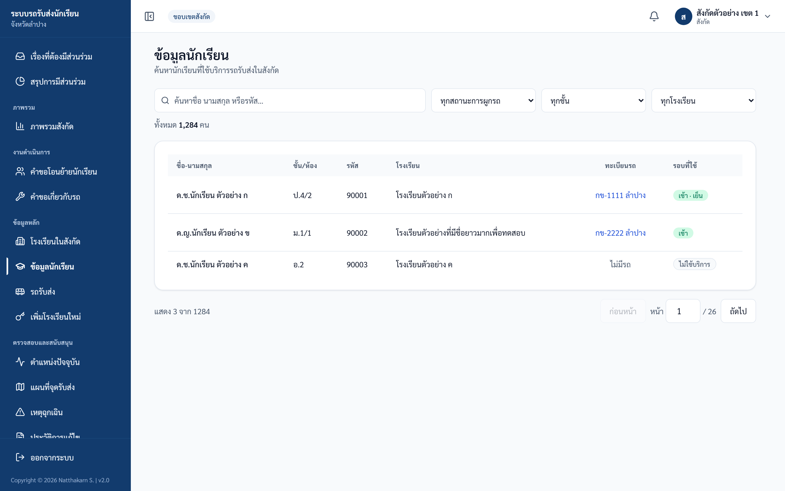
ภาพ: ข้อมูลนักเรียนในสังกัด
✅ ผลลัพธ์ที่ถูกต้อง: เห็นรายชื่อนักเรียนตามคำค้น/ตัวกรอง ⚠️ ถ้าติดปัญหา: ตามนโยบายความเป็นส่วนตัว (PDPA) หน้านี้ไม่แสดงชื่อผู้ปกครองและเบอร์โทร (บัญชีสังกัดเป็นการกำกับดูแลแบบอ่านอย่างเดียว) — ข้อมูลผู้ปกครองดูได้จากบัญชีโรงเรียนเท่านั้น
งานที่ 6 — ดูรถรับส่ง
ใช้เมื่อ: ตรวจข้อมูลรถและข้อมูลความปลอดภัยของรถที่ให้บริการโรงเรียนในสังกัด
ขั้นตอน:
- เปิดเมนู "รถรับส่ง"
- ค้นหาด้วย ทะเบียนรถ (ช่องค้นหาด้านบน)
- ดูการ์ดแต่ละคัน: ทะเบียน / ประเภทรถ / โรงเรียนที่ใช้ / จำนวนนักเรียน / คนขับ+เบอร์ / ผู้ดูแลรถ+เบอร์ / เจ้าของรถ+เบอร์ / ข้อมูลความปลอดภัยรถ (ประกัน + การตรวจสภาพ)
- กด "แสดงรายชื่อนักเรียน" (ปุ่มมีไอคอนลูกศรลงอยู่ข้างหน้า) เพื่อกางรายชื่อนักเรียนในรถคันนั้น — คอลัมน์: ชื่อ-นามสกุล / ชั้น/ห้อง / โรงเรียน / ผู้ปกครอง / เบอร์โทร (สองคอลัมน์สุดท้ายแสดง "-" เสมอสำหรับบัญชีสังกัด) ; กดซ้ำ (ปุ่มจะเปลี่ยนเป็น "ซ่อนรายชื่อนักเรียน") เพื่อพับเก็บ
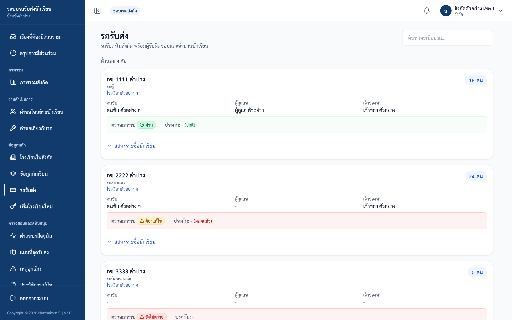
ภาพ: รถรับส่งในสังกัด
✅ ผลลัพธ์ที่ถูกต้อง: เห็นการ์ดรถพร้อมรายละเอียด และขยายดูรายชื่อนักเรียนได้ ⚠️ ถ้าติดปัญหา:
- ตัวเลข "จำนวนนักเรียน" และ "โรงเรียนที่ใช้" นับเฉพาะส่วนที่อยู่ในสังกัดของคุณ — รถคันเดียวอาจวิ่งหลายสังกัด แต่คุณเห็นเฉพาะนักเรียน/โรงเรียนของตน
- ในตารางรายชื่อนักเรียนที่ขยายออกมา คอลัมน์ "ผู้ปกครอง" และ "เบอร์โทร" จะแสดงเป็น "-" เสมอ เพราะบัญชีสังกัดไม่มีสิทธิ์เห็นข้อมูลผู้ปกครอง (ไม่ใช่ข้อผิดพลาด)
งานที่ 7 — ดูสถานะวันนี้ (ไม่มีในเมนู)
ใช้เมื่อ: ต้องการดูการรับ-ส่งวันนี้แบบขยาย โรงเรียน → รถ → นักเรียน
ขั้นตอน:
- เข้าหน้านี้โดยพิมพ์ URL
/affiliation/statusตรง (ไม่มีลิงก์ในเมนู) - กดชื่อโรงเรียนเพื่อขยาย (เห็น "เช้า x/y" และ "เย็น x/y")
- กดทะเบียนรถเพื่อขยายต่อ
- ดูตารางนักเรียน: ชื่อ / ชั้น/ห้อง / "ส่งเช้า" / "รับเย็น" — ช่องของแต่ละรอบจะขึ้นป้ายอย่างใดอย่างหนึ่ง: "เรียบร้อย" พร้อมเวลาที่เช็ก, "รอดำเนินการ" (ยังไม่เช็ก) หรือ "ไม่ใช้บริการ" (นักเรียนไม่ได้ใช้รถในรอบนั้น) ถ้ารถคันนั้นไม่มีนักเรียนจะขึ้น "ไม่มีนักเรียนในรถคันนี้" — ด้านบนของหน้ามีช่องค้นหาทะเบียนรถด้วย
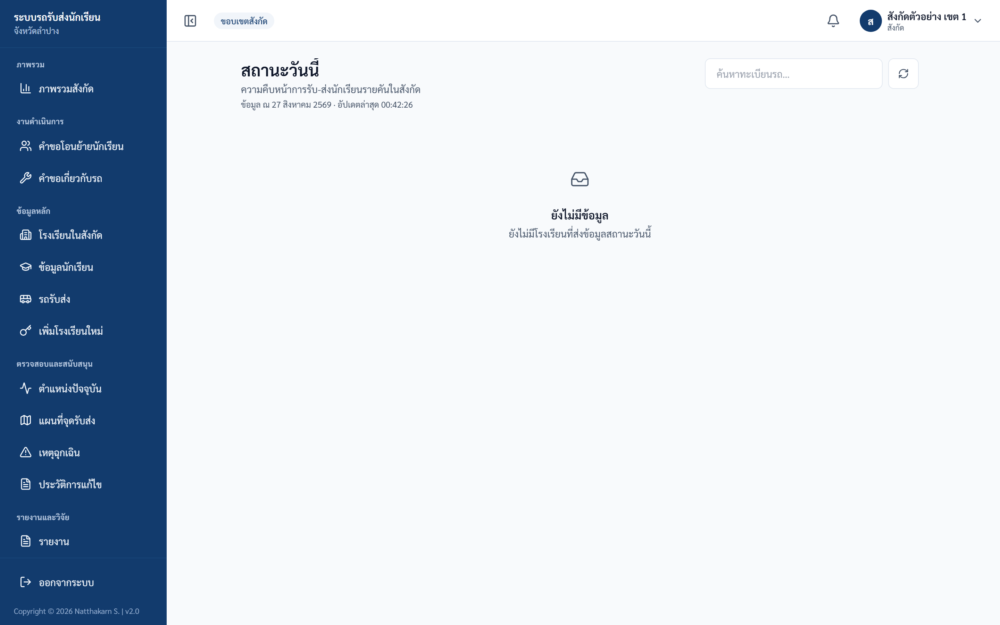
ภาพ: สถานะขึ้น-ลงรถวันนี้
✅ ผลลัพธ์ที่ถูกต้อง: เห็นโครงสร้าง โรงเรียน → รถ → นักเรียน พร้อมสถานะรับ-ส่ง ⚠️ ถ้าติดปัญหา: หน้านี้อ่านอย่างเดียว — บัญชีสังกัดเช็กอิน/เช็กเอาท์แทนคนขับไม่ได้ (ข้อมูลบางส่วนซ้ำกับ Dashboard อยู่แล้ว)
งานที่ 8 — ดูตำแหน่งรถ live
ใช้เมื่อ: ติดตามตำแหน่ง GPS ของรถในสังกัดระหว่างวิ่ง (อัปเดตอัตโนมัติทุก ~15 วินาที)
ขั้นตอน:
- เปิดเมนู "ตำแหน่งปัจจุบัน"
- ดูตัวเลขสรุป (KPI): "รถทั้งหมดในสังกัด" / "นักเรียนในสังกัด" / "ออนไลน์" / "สัญญาณเก่า" / "หยุดส่ง" / "ออฟไลน์ / ยังไม่มีข้อมูล"
- ดูรายการรถและหมุด (pin) บนแผนที่ พร้อมสถานะ (ONLINE / STALE / PAUSED / OFFLINE), ป้าย "ความแม่นยำต่ำ" และ "±X ม."
- คลิกรถในรายการเพื่อ highlight ตำแหน่งบนแผนที่
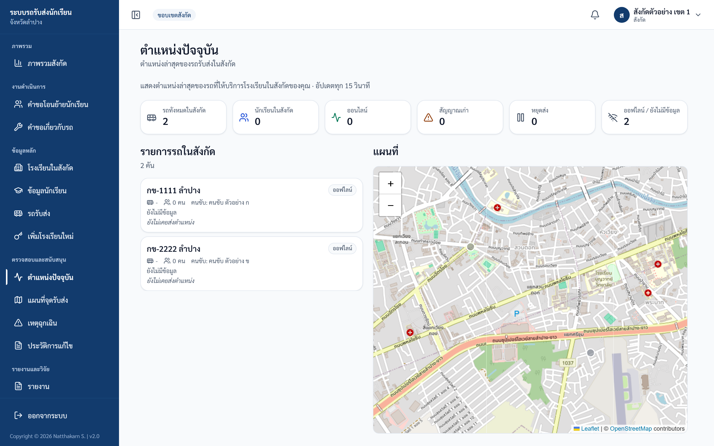
ภาพ: ตำแหน่งรถปัจจุบัน (live)
✅ ผลลัพธ์ที่ถูกต้อง: เห็นรถที่กำลังส่งตำแหน่งบนแผนที่และรายการ ⚠️ ถ้าติดปัญหา:
- ถ้าคนขับยังไม่เปิด "เริ่มส่งตำแหน่ง" หน้านี้จะขึ้น "ยังไม่มีรถที่กำลังส่งตำแหน่ง…" — เป็นเรื่องปกติ ไม่ใช่ข้อผิดพลาด
- ป้าย "อุปกรณ์ออฟไลน์" หรือ "ข้อมูลอาจไม่เป็นปัจจุบัน" หมายความว่ารถนั้นไม่ได้ส่งสัญญาณช่วงหนึ่ง (เกิน 45 วินาที)
งานที่ 9 — ดูแผนที่จุดรับส่ง
ใช้เมื่อ: ดูภาพรวมจุดรับ-ส่งในสังกัดแบบรวม (aggregate) — ไม่แสดงชื่อ เบอร์ หรือที่อยู่ของนักเรียน ตามนโยบายความเป็นส่วนตัว
ขั้นตอน:
- เปิดเมนู "แผนที่จุดรับส่ง"
- ดูตัวเลขสรุป (KPI): "จุดรับส่งทั้งหมด" / "นักเรียนในขอบเขต" / "โรงเรียนที่เกี่ยวข้อง" / "รถที่เกี่ยวข้อง"
- ปรับตัวกรอง: "ค้นหา" (ชื่อจุด/ทะเบียน/โรงเรียน) / "รอบ" (ทั้งหมด/เช้า/เย็น/เช้าและเย็น) / "ระดับชั้น" / "โรงเรียน" / "รถรับส่ง"
- กด "ใช้ตัวกรอง" เพื่อดูผล หรือ "ล้างตัวกรอง" เพื่อเริ่มใหม่
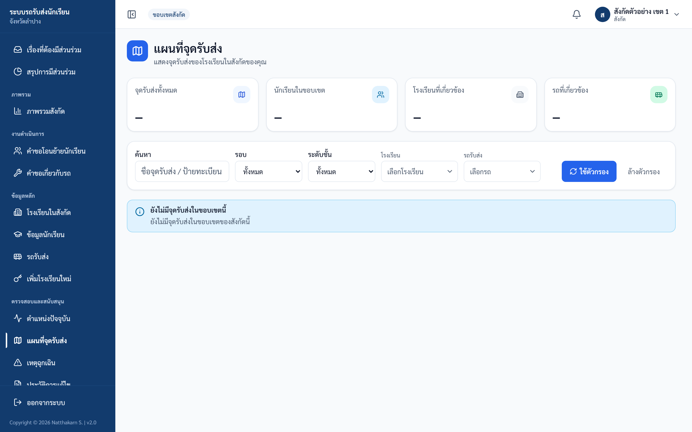
ภาพ: แผนที่จุดรับ-ส่ง
✅ ผลลัพธ์ที่ถูกต้อง: เห็นจุดรับ-ส่งตามตัวกรองที่เลือก ⚠️ ถ้าติดปัญหา: เลือกได้เฉพาะโรงเรียน/รถในสังกัดของคุณ — ถ้าเลือกโรงเรียนนอกสังกัดจะขึ้น "ไม่มีสิทธิ์เข้าถึงโรงเรียนนี้"
งานที่ 10 — ดูเหตุฉุกเฉิน
ใช้เมื่อ: ตรวจเหตุฉุกเฉินที่แจ้งจากรถซึ่งให้บริการนักเรียนในสังกัด
ขั้นตอน:
- เปิดเมนู "เหตุฉุกเฉิน"
- เลื่อนดูรายการ ใช้ปุ่มแบ่งหน้า (pagination) เพื่อดูเพิ่ม
- อ่านรายละเอียดแต่ละรายการ: ทะเบียนรถ / ป้ายช่องทาง ("LINE" หรือ "เว็บ") / เวลา / รายละเอียด / "หมายเหตุ:" / "ผลลัพธ์:" / "รายงานโดย:"
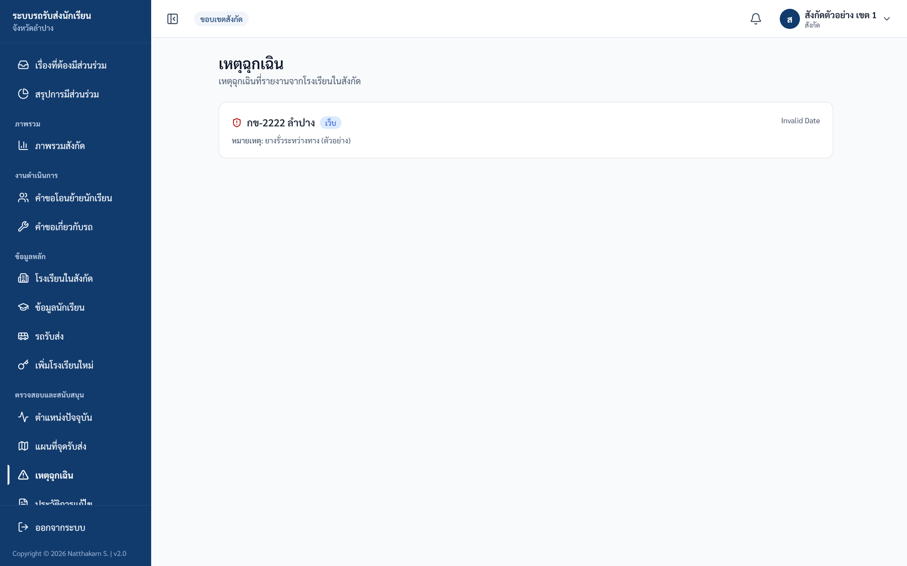
ภาพ: เหตุฉุกเฉินในเขต
✅ ผลลัพธ์ที่ถูกต้อง: เห็นรายการเหตุฉุกเฉินจากรถในสังกัด ⚠️ ถ้าติดปัญหา:
- หน้านี้อ่านอย่างเดียว — บัญชีสังกัดแก้ไขหรือปิดเคสเหตุฉุกเฉินไม่ได้
- ถ้าไม่มีรายการจะขึ้น "ไม่มีเหตุฉุกเฉิน — ยังไม่มีรายงานเหตุฉุกเฉินจากรถในสังกัดนี้"
งานที่ 11 — ดูประวัติการแก้ไข (Audit Log)
ใช้เมื่อ: ตรวจสอบประวัติการแก้ไขของบัญชีและข้อมูลในสังกัด และส่งออกเป็น CSV
ขั้นตอน:
- เปิดเมนู "ประวัติการแก้ไข" (หัวข้อ "ประวัติการแก้ไข (สังกัด)")
- เลือกตัวกรอง: ช่องเลือกประเภทการกระทำ (ค่าตั้งต้น "ทุกการกระทำ" เลือกได้ สร้าง / แก้ไข / ลบ / นำเข้า / อนุมัติ / ส่งออก / เข้าสู่ระบบ) และช่วงวันที่ในช่อง "ตั้งแต่" และ "ถึง"
- ดูรายการผลลัพธ์ (แสดงเป็นการ์ด เรียงจากล่าสุดไปเก่าสุด หน้าละ 30 รายการ)
- กดปุ่ม "Export CSV" มุมขวาบน เพื่อดาวน์โหลดไฟล์ชื่อ
audit_YYYY-MM-DD.csv(วันที่ตามเวลาประเทศไทย)
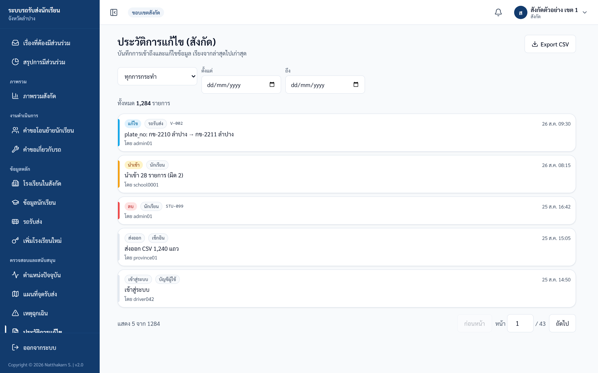
ภาพ: ประวัติการแก้ไข
✅ ผลลัพธ์ที่ถูกต้อง: เห็นรายการประวัติตามตัวกรอง และดาวน์โหลด CSV ได้ ⚠️ ถ้าติดปัญหา:
- ขอบเขตที่เห็น: การกระทำของบัญชีโรงเรียนในสังกัด, บัญชีสังกัดของคุณเอง และการกระทำต่อข้อมูลนักเรียน/คำขอรายชื่อของนักเรียนในสังกัด
- ข้อมูลส่วนบุคคล (เบอร์โทร) จะถูกปกปิดอัตโนมัติ ทั้งในรายการบนหน้าจอและไฟล์ CSV
- ไฟล์ CSV ส่งออกได้สูงสุด 5,000 แถวล่าสุด — ถ้าเยอะกว่านี้ ให้ระบุช่วงวันที่ในช่อง "ตั้งแต่" และ "ถึง" แล้วส่งออกเป็นช่วง ๆ (ไฟล์จะมีบรรทัดเตือน "แสดง 5000 แถวล่าสุด…")
งานที่ 12 — เพิ่มโรงเรียนใหม่ + จัดการบัญชีโรงเรียน
ใช้เมื่อ: เปิดบัญชีให้โรงเรียนในสังกัด (ทีละแห่ง หรือนำเข้าหลายแห่งจาก Excel) — เมนู "เพิ่มโรงเรียนใหม่"
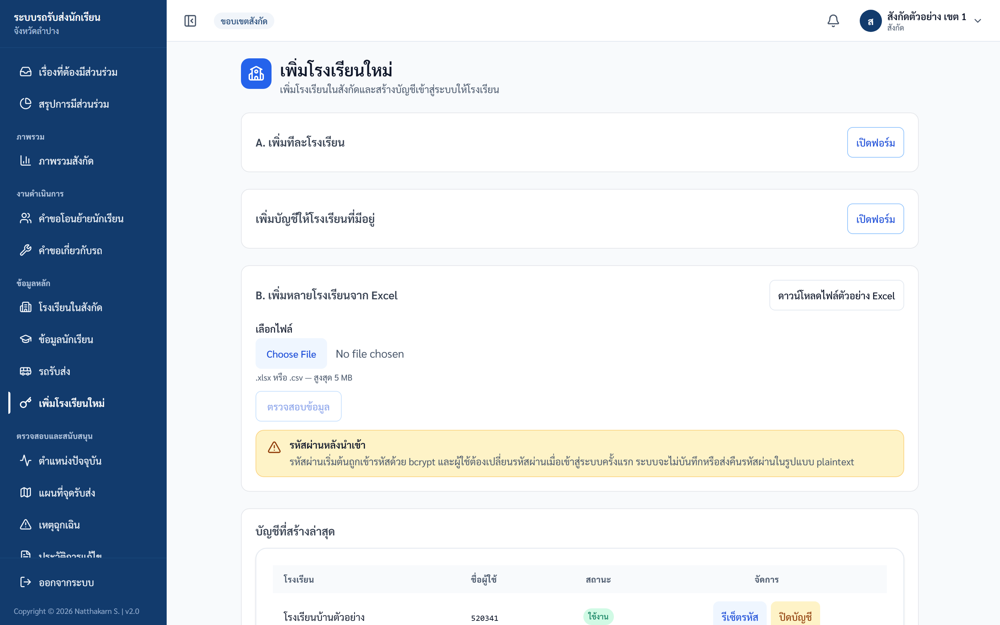
ภาพ: เพิ่มโรงเรียนใหม่ / จัดการบัญชีโรงเรียน
ขั้นตอน A — เพิ่มทีละโรงเรียน:
- เปิดเมนู "เพิ่มโรงเรียนใหม่" แล้วกด "เปิดฟอร์ม"
- กรอก "รหัสโรงเรียน" (แสดงใต้ช่องกรอกว่า "6-10 หลัก · รหัสนี้จะถูกใช้เป็นรหัสผ่านเริ่มต้นโดยอัตโนมัติ")
- กรอก "ชื่อโรงเรียน"
- กรอก "ชื่อผู้ใช้" (แสดงใต้ช่องกรอกว่า "รหัส OBEC 6 หลัก" — ช่องนี้พิมพ์ได้เฉพาะตัวเลข 6 หลัก)
- กด "เพิ่มโรงเรียนและสร้างบัญชี"
- ระบบขึ้น toast "เพิ่มโรงเรียนและสร้างบัญชีสำเร็จ — รหัสผ่านเริ่มต้นคือรหัสโรงเรียน"
ขั้นตอน A2 — เพิ่มบัญชีให้โรงเรียนที่มีอยู่: ใช้เมื่อโรงเรียนอยู่ในระบบแล้วแต่ยังไม่มีบัญชี หรือต้องการเพิ่มบัญชีให้โรงเรียนนั้นอีก 1 บัญชี (การ์ดนี้อยู่ระหว่างขั้นตอน A และ B บนหน้าจอ)
- ที่การ์ด "เพิ่มบัญชีให้โรงเรียนที่มีอยู่" กด "เปิดฟอร์ม"
- เลือก "โรงเรียน" จากรายการ ("— เลือกโรงเรียนในสังกัด —" แสดงเฉพาะโรงเรียนในสังกัดของคุณ)
- กรอก "ชื่อผู้ใช้" (ตัวเลข 6 หลัก — รหัส OBEC) และ "ชื่อที่แสดง" (ไม่บังคับ เช่น "บัญชีธุรการ" ถ้าเว้นว่างระบบจะใช้ชื่อโรงเรียน)
- กด "เพิ่มบัญชี" → ระบบขึ้น toast "เพิ่มบัญชีให้โรงเรียนสำเร็จ — รหัสผ่านเริ่มต้นคือรหัสโรงเรียน"
ข้อควรรู้: ชื่อผู้ใช้ต้องไม่ซ้ำกับบัญชีอื่นในระบบ ถ้าโรงเรียนนั้นมีบัญชีที่ใช้รหัส OBEC เป็นชื่อผู้ใช้อยู่แล้ว บัญชีที่ 2 ต้องใช้ตัวเลข 6 หลักอื่น (ถ้าซ้ำจะขึ้นข้อความภาษาอังกฤษ "Duplicate entry — record already exists") — รหัสผ่านเริ่มต้นของบัญชีใหม่คือรหัสโรงเรียน และระบบบังคับให้เปลี่ยนรหัสผ่านเมื่อเข้าสู่ระบบครั้งแรกเช่นเดียวกับขั้นตอน A
ขั้นตอน B — เพิ่มหลายโรงเรียนจาก Excel (นำเข้าแบบ 2 ขั้น):
- กด "ดาวน์โหลดไฟล์ตัวอย่าง Excel" — ไฟล์มี 4 คอลัมน์ (school_code / school_name / username / initial_password) และชีท "คำอธิบาย"
- กรอกข้อมูลในไฟล์ แล้วเลือกไฟล์ (.xlsx หรือ .csv ขนาดไม่เกิน 5MB)
- กด "ตรวจสอบข้อมูล" — ระบบยังไม่บันทึก เพียงแสดงการ์ดสรุป "จำนวนทั้งหมด / ผ่าน / ไม่ผ่าน" + ตารางตัวอย่าง
- ตรวจสอบแล้วกด "ยืนยันนำเข้าเฉพาะรายการที่ผ่าน (N)" → ยืนยันในกล่องที่เด้งขึ้น
- ระบบขึ้น toast "นำเข้าสำเร็จ: สร้าง X บัญชี, ข้าม Y จาก Z แถว"
ขั้นตอน C — ดูและจัดการบัญชีโรงเรียน:
- เลื่อนไปที่ตาราง "บัญชีที่สร้างล่าสุด" — แสดงบัญชีโรงเรียนทั้งหมดในสังกัดของคุณ เรียงตามชื่อโรงเรียน หน้าละ 10 รายการ (ถ้ามีเกิน 10 บัญชี จะมีแถบ "แสดง X-Y จากทั้งหมด N บัญชี" และปุ่ม "ก่อนหน้า" / เลขหน้า / "ถัดไป" ให้กดเปลี่ยนหน้า)
- ดูคอลัมน์: โรงเรียน / ชื่อผู้ใช้ / สถานะ ("ใช้งาน" หรือ "ปิด") / จัดการ
- ในคอลัมน์ "จัดการ" ของแต่ละแถวมีปุ่ม "รีเซ็ตรหัส" — ตั้งรหัสผ่านใหม่ให้โรงเรียน (อย่างน้อย 8 ตัวอักษร และต้องกรอกยืนยันให้ตรงกัน) เมื่อสำเร็จระบบจะบังคับให้โรงเรียนเปลี่ยนรหัสอีกครั้งตอนเข้าสู่ระบบครั้งถัดไป
- และปุ่ม "ปิดบัญชี" / "เปิดบัญชี" — ระบบจะถามยืนยันก่อน ปิดบัญชีแล้วโรงเรียนจะเข้าสู่ระบบด้วยบัญชีนี้ไม่ได้จนกว่าจะเปิดใช้งานอีกครั้ง ข้อมูลของโรงเรียนไม่ถูกลบ
- ถ้ายังไม่มีบัญชีโรงเรียนเลย จะขึ้นข้อความ "ยังไม่มีบัญชีโรงเรียน"
✅ ผลลัพธ์ที่ถูกต้อง: เพิ่มโรงเรียน/สร้างบัญชีสำเร็จ และเห็นบัญชีใหม่ในตาราง "บัญชีที่สร้างล่าสุด" ⚠️ ถ้าติดปัญหา:
- รหัสผ่านเริ่มต้นของบัญชีโรงเรียน = รหัสโรงเรียน ระบบบังคับให้โรงเรียนเปลี่ยนรหัสตอนเข้าครั้งแรก และจะไม่แสดงรหัสผ่านกลับมาให้ดู
- ชื่อผู้ใช้ต้องเป็นตัวเลข 6 หลัก (รหัส OBEC) — ถ้าผิดขึ้น "ชื่อผู้ใช้ต้องเป็นรหัส OBEC 6 หลัก (ตัวเลขเท่านั้น)"
- รหัสโรงเรียนต้องไม่ซ้ำทั่วทั้งระบบ (เป็นรหัสกลาง) — ถ้าซ้ำขึ้น "รหัสโรงเรียน X มีอยู่ในระบบแล้ว"
- ต้องกด "ตรวจสอบข้อมูล" ก่อนเสมอจึงจะกด "ยืนยันนำเข้า" ได้ และต้องมีอย่างน้อย 1 แถวที่ผ่าน — ตอนยืนยันระบบจะตรวจกับฐานข้อมูลล่าสุดอีกครั้ง (ผลตรวจเก่าจะไม่ถูกเชื่อ)
- แถวที่ไม่ผ่านจะถูกข้าม ไม่ทำให้ทั้งชุดล้มเหลว สาเหตุที่พบบ่อย: รหัสโรงเรียนไม่ถูกต้อง, ไม่มีชื่อโรงเรียน, ชื่อผู้ใช้ไม่ใช่ 6 หลัก, รหัสซ้ำในระบบ หรือรหัสซ้ำกันภายในไฟล์เดียวกัน
- คอลัมน์
initial_passwordในไฟล์ Excel ต้องกรอกทุกแถว — ถ้าเว้นว่าง แถวนั้นจะไม่ผ่านและคอลัมน์ "ข้อความ" จะขึ้น "กรุณาระบุรหัสผ่านเริ่มต้น" ถ้ารหัสที่กรอกไม่ปลอดภัยพอจะขึ้น "รหัสผ่านที่ระบุไม่ผ่านเกณฑ์ (อย่างน้อย 8 ตัว ไม่อยู่ในรายการคาดเดาง่าย ไม่ซ้ำตัวเดียว)" ระบบเก็บรหัสผ่านแบบเข้ารหัสและไม่แสดงกลับมาให้ดูอีก จึงควรจดรหัสที่กรอกไว้เพื่อแจ้งโรงเรียน (โรงเรียนจะถูกบังคับให้เปลี่ยนรหัสเมื่อเข้าใช้งานครั้งแรก) — ต่างจากการเพิ่มทีละโรงเรียนในขั้นตอน A ที่ระบบใช้รหัสโรงเรียนเป็นรหัสผ่านเริ่มต้นให้อัตโนมัติ - ตาราง "บัญชีที่สร้างล่าสุด" มีคอลัมน์ "จัดการ" ทุกแถว สังกัดทำเองได้ ไม่ต้องติดต่อ admin — กด "รีเซ็ตรหัส" จะเปิดหน้าต่าง "รีเซ็ตรหัสผ่านบัญชีโรงเรียน" ให้กรอก "รหัสผ่านใหม่" และ "ยืนยันรหัสผ่านใหม่" ให้ตรงกัน (อย่างน้อย 8 ตัวอักษร ต้องไม่เป็นรหัสที่เดาง่าย เช่น 12345678 หรือตัวอักษรซ้ำกันทั้งหมด และต้องไม่ตรงกับชื่อผู้ใช้ ไม่เช่นนั้นจะขึ้น "รหัสผ่านนี้คาดเดาง่ายเกินไป กรุณาใช้รหัสผ่านอื่น") แล้วกด "รีเซ็ตรหัสผ่าน" — ระบบจะบังคับให้โรงเรียนเปลี่ยนรหัสอีกครั้งเมื่อเข้าสู่ระบบครั้งถัดไป และถ้าโรงเรียนเปิดหน้าจอค้างอยู่จะต้องเข้าสู่ระบบใหม่ทันที · กด "ปิดบัญชี" / "เปิดบัญชี" จะมีกล่องยืนยัน ("ปิดบัญชีนี้?" / "เปิดบัญชีนี้?") — ปิดแล้วโรงเรียนจะเข้าสู่ระบบด้วยบัญชีนี้ไม่ได้จนกว่าจะเปิดใช้งานอีกครั้ง ข้อมูลของโรงเรียนไม่ถูกลบ
- ทุกการจัดการบัญชีโรงเรียนบังคับว่าโรงเรียนต้องอยู่ในสังกัดของคุณ ถ้าไม่ใช่จะขึ้น "ไม่พบบัญชีนี้ในสังกัด"
งานที่ 13 — รายงานและส่งออก
ใช้เมื่อ: ทำรายงานรายวัน/รายเดือน/สรุป และดาวน์โหลดไฟล์ — เมนู "รายงาน"
ขั้นตอน:
- เปิดเมนู "รายงาน" → เลือกแท็บย่อย "รายวัน" / "รายเดือน" / "สรุปภาพรวม"
- เลือกช่วงเวลาจากช่องด้านบนของรายงาน: แท็บ "รายวัน" มีช่อง "วันที่ของรายงาน" / แท็บ "รายเดือน" มีช่อง "เดือนของรายงาน" และปุ่ม "ปัจจุบัน" สำหรับกลับมาเดือนนี้ / แท็บ "สรุปภาพรวม" ไม่มีช่องให้เลือก ระบบแสดงข้อมูลล่าสุดให้เอง (กด "รีเฟรชข้อมูล" เพื่อดึงใหม่) — หน้าจอรายงานยังไม่มีช่องกรองรายโรงเรียนหรือรายทะเบียนรถ
- ส่งออกไฟล์ด้วยปุ่ม "CSV" / "Excel" / "PDF"
รูปแบบไฟล์:
- CSV — คอลัมน์: รหัสนักเรียน, ชื่อ-นามสกุล, ระดับชั้น, ห้อง, โรงเรียน, เขตพื้นที่, ทะเบียนรถ, บริการเช้า/เย็น, สถานะเช้า/เวลาเช้า/สถานะเย็น/เวลาเย็น (รองรับภาษาไทยเปิดใน Excel ได้)
- Excel — มีการจัดรูปแบบหัวตาราง
- PDF — รองรับฟอนต์ไทย (สรุปภาพรวม + รายโรงเรียน + รายคัน)
✅ ผลลัพธ์ที่ถูกต้อง: ดูรายงานและดาวน์โหลดไฟล์ตามรูปแบบที่เลือกได้ ⚠️ ถ้าติดปัญหา:
- ทุกรายงานจำกัดขอบเขตให้เห็นเฉพาะข้อมูลในสังกัดของคุณอัตโนมัติ — แม้ใส่รหัสสังกัดอื่นในตัวกรอง ระบบจะไม่สนใจและล็อกที่สังกัดของคุณ
- หน้ารายงานทั้งหมด (ดูรายงาน + ส่งออกไฟล์) จำกัดความถี่รวมกันที่ 40 ครั้งต่อ 5 นาที — ถ้าเกินจะขึ้น "ขอรายงานถี่เกินไป กรุณารอสักครู่" ให้รอสักครู่แล้วลองใหม่
- บัญชีสังกัด ไม่มี ขั้นตอน "บันทึกการตัดสินใจ (decision log)" ก่อนส่งออก PDF (เป็นของบทบาทส่วนกลางเท่านั้น)
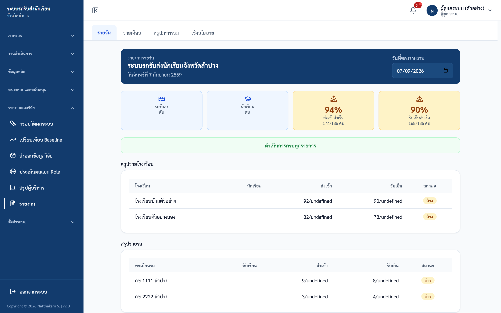
ภาพ: หน้ารายงาน — แท็บ รายวัน/รายเดือน/สรุปภาพรวม พร้อมปุ่มส่งออก (ภาพตัวอย่างนี้ถ่ายจากบัญชีผู้ดูแลระบบ จึงมีแท็บ "เชิงนโยบาย" และแถบเมนูของ admin — บัญชีสังกัดจะเห็น 3 แท็บ คือ รายวัน / รายเดือน / สรุปภาพรวม และเห็นแถบเมนูของสังกัด)
งานที่ 13B — อนุมัติคำขอโอนย้ายนักเรียน
เมนู: คำขอโอนย้ายนักเรียน (/affiliation/transfer-requests)
สังกัด/เขต อนุมัติคำขอโอนย้ายนักเรียนระหว่างโรงเรียนในสังกัดตนเอง (เดิมเป็นงานของ admin)
ขั้นตอน
- เข้าเมนู "คำขอโอนย้ายนักเรียน" ในกลุ่ม "งานดำเนินการ" ของแถบเมนูด้านซ้าย
- เลือกตัวกรอง: รออนุมัติ / โอนย้ายแล้ว / ไม่อนุมัติ / ทั้งหมด (เมื่อเลือก "รออนุมัติ" และมีคำขอค้างอยู่ จะมีป้ายจำนวน "N รออนุมัติ" ที่หัวหน้าจอ ส่วนปุ่ม "รีเฟรช" ใช้โหลดรายการใหม่)
- กด "รายละเอียด" ท้ายแถว เพื่อดูข้อมูลนักเรียน ประเภทคำขอ (โอนออก/โอนเข้า) โรงเรียนต้นทาง-ปลายทาง และเหตุผล
- ถ้าคำขออยู่ในสถานะ "รออนุมัติ" จะมีช่อง "หมายเหตุ" (ไม่บังคับ — จะถูกบันทึกไว้กับคำขอ) ให้กรอกได้ จากนั้นกด "อนุมัติ" หรือ "ไม่อนุมัติ" ระบบจะแสดงปุ่ม "ยืนยันอนุมัติ" หรือ "ยืนยันไม่อนุมัติ" ขึ้นมา — ต้องกดปุ่มยืนยันอีกครั้ง ระบบจึงจะบันทึก (คำขอที่ไม่ได้อยู่ในสถานะรออนุมัติจะมีเพียงปุ่ม "ปิด")
การอนุมัติจะปิดนักเรียนต้นทาง (soft-close) และสร้างนักเรียนปลายทางใหม่อัตโนมัติ
งานที่ 13C — อนุมัติคำขอเกี่ยวกับรถ
เมนู: คำขอเกี่ยวกับรถ (/affiliation/vehicle-requests)
สังกัด/เขต อนุมัติคำขอเกี่ยวกับรถจากโรงเรียนในสังกัด (เดิมเป็นงานของ admin)
ประเภทคำขอ
- กู้คืนรถที่ลบ — อนุมัติแล้วระบบกู้คืนรถเดิม
- ใช้รถร่วม — แจ้งเพื่อทราบ (informational)
- เพิ่มรถใหม่ — แจ้งเพื่อทราบ
- ตรวจสอบรถซ้ำ — แจ้งเพื่อทราบ
ขั้นตอน
- เข้าเมนู "คำขอเกี่ยวกับรถ" ในกลุ่ม "งานดำเนินการ" ของแถบเมนูด้านซ้าย
- เลือกตัวกรองสถานะ (รออนุมัติ / อนุมัติแล้ว / ไม่อนุมัติ / ทั้งหมด) แล้วกด "รายละเอียด" ในคอลัมน์ "จัดการ" ท้ายแถว — ตารางแสดงคอลัมน์ ประเภท / โรงเรียน / วันที่ / ทะเบียน / สถานะ
- ใส่หมายเหตุ แล้วกด "อนุมัติ" หรือ "ไม่อนุมัติ"
งานที่ 14 — ออกจากระบบ
ใช้เมื่อ: เลิกใช้งาน
ขั้นตอน:
- กดปุ่ม "ออกจากระบบ" ที่ล่างสุดของแถบเมนูด้านข้าง (บนคอมพิวเตอร์) หรือเปิดเมนูบัญชีมุมขวาบนแล้วเลือก "ออกจากระบบ"
- ระบบจะพาออกจากระบบทันทีและกลับสู่หน้าเข้าสู่ระบบ (ไม่มีหน้าต่างยืนยัน)
✅ ผลลัพธ์ที่ถูกต้อง: กลับมาที่หน้าเข้าสู่ระบบ

ภาพ: เมนูบัญชี (มุมขวาบน) — "เปลี่ยนรหัสผ่าน" / "ออกจากระบบ"
ตารางขอบเขตสิทธิ์ (อ้างอิงด่วน)
คุณเห็นข้อมูลได้แค่ไหน
| ข้อมูล | ขอบเขต |
|---|---|
| โรงเรียน / นักเรียน / รถ / สถานะ | เฉพาะที่อยู่ในสังกัด (affiliation) ของคุณ |
| เหตุฉุกเฉิน / live vehicles / แผนที่จุดรับส่ง | เฉพาะรถที่ให้บริการนักเรียนในสังกัด |
| ประวัติการแก้ไข (audit log) | เฉพาะของบัญชีโรงเรียนในสังกัด + บัญชีคุณเอง + ข้อมูลนักเรียนในสังกัด |
| ข้อมูลรถข้ามสังกัด | เห็นเฉพาะส่วน (นักเรียน/โรงเรียน) ที่อยู่ในสังกัดของคุณ |
| ชื่อ/เบอร์ผู้ปกครอง | ไม่เห็น (นโยบายความเป็นส่วนตัว PDPA) |
สิ่งที่ทำไม่ได้ (และใครทำแทน)
| ทำไม่ได้ | ใครทำแทน |
|---|---|
| เช็กอิน/เช็กเอาท์นักเรียน | คนขับ (หรือ admin) |
| เพิ่ม/แก้ไข/ลบนักเรียน | โรงเรียน (หรือ admin) |
| เพิ่ม/แก้รถ และตรวจสภาพรถ | โรงเรียน / ขนส่ง (transport) / admin |
| ดูชื่อ/เบอร์ผู้ปกครอง | โรงเรียน (ผ่านบัญชีของตน) |
| ดูข้อมูลสังกัดอื่น | ไม่ได้ — ระบบล็อกที่สังกัดของคุณ |
| จัดการผู้ใช้ระบบ / ค่าระบบ / นโยบาย | admin / ส่วนกลาง (province) |
| รีเซ็ตรหัสผ่านบัญชีของตัวเอง | admin / ส่วนกลาง |
| รีเซ็ตรหัสผ่าน / ปิด-เปิดบัญชีของโรงเรียนที่ไม่ได้อยู่ในสังกัดของคุณ | admin — ส่วนโรงเรียนในสังกัดของคุณ ทำได้เอง ด้วยปุ่ม "รีเซ็ตรหัส" และ "ปิดบัญชี"/"เปิดบัญชี" ในตาราง "บัญชีที่สร้างล่าสุด" ของเมนู "เพิ่มโรงเรียนใหม่" (ดูงานที่ 12) |
ℹ️ การจำกัดสิทธิ์ทั้งหมดบังคับที่ฝั่งเซิร์ฟเวอร์ — ถ้าพยายามเข้าถึงข้อมูลนอกสังกัดจะขึ้น "ไม่พบข้อมูลเขตพื้นที่ที่ผูกกับบัญชีนี้" หรือถูกปฏิเสธการเข้าถึง
สรุปปัญหาที่พบบ่อย
| อาการ | วิธีแก้ |
|---|---|
| กด "แจ้งเตือน" แล้วโรงเรียนไม่ได้รับข้อความ | ปุ่มแจ้งเตือนไม่ได้ส่ง LINE/SMS อัตโนมัติ — ระบบแค่คัดลอกข้อความให้ ต้องนำไปส่งเองทาง LINE/โทรศัพท์ |
| คอลัมน์ "ผู้ปกครอง"/"เบอร์โทร" ในหน้ารถว่าง (แสดง "-") | ปกติ ไม่ใช่ข้อผิดพลาด — บัญชีสังกัดไม่มีสิทธิ์เห็นข้อมูลผู้ปกครอง ดูได้จากบัญชีโรงเรียนเท่านั้น |
| หาเมนู "สถานะวันนี้" ไม่เจอ | ไม่มีลิงก์ในเมนู เข้าได้โดยพิมพ์ URL /affiliation/status ตรง (ข้อมูลซ้ำกับ Dashboard) |
| นำเข้าบัญชีโรงเรียนจาก Excel บางแถวถูกข้าม | สาเหตุ: รหัสโรงเรียนไม่ใช่ 6-10 หลัก, ไม่มีชื่อโรงเรียน, ชื่อผู้ใช้ไม่ใช่ตัวเลข 6 หลัก, รหัส/ชื่อผู้ใช้ซ้ำในระบบหรือซ้ำกันในไฟล์ → แก้ไฟล์แล้วกด "ตรวจสอบข้อมูล" ใหม่ |
| ปุ่ม "ยืนยันนำเข้า" กดไม่ได้ | ต้องกด "ตรวจสอบข้อมูล" ก่อนเสมอ และต้องมีอย่างน้อย 1 แถวที่ผ่าน |
| ส่งออก CSV ประวัติการแก้ไขแล้วข้อมูลไม่ครบ | ส่งออกได้สูงสุด 5,000 แถวล่าสุด → ระบุช่วงวันที่ในช่อง "ตั้งแต่" และ "ถึง" แล้วส่งออกเป็นช่วง ๆ |
| หน้า "ตำแหน่งปัจจุบัน" ไม่มีรถขึ้นเลย | แสดงเฉพาะรถที่คนขับเปิด "เริ่มส่งตำแหน่ง" ถ้าไม่มีคนขับส่งตำแหน่งจะว่าง เป็นเรื่องปกติ |
| เปลี่ยนรหัสผ่านแล้วถูกเด้งออก | ปกติ — หลังเปลี่ยนรหัส ระบบออกจากระบบทุกอุปกรณ์เพื่อความปลอดภัย ให้เข้าใหม่ด้วยรหัสใหม่ |
| ลืมรหัสผ่านบัญชีสังกัด | บัญชีสังกัดรีเซ็ตรหัสให้ตัวเองไม่ได้ → ติดต่อผู้ดูแลระบบระดับจังหวัด (ตามข้อความในแผง "ลืมรหัสผ่านหรือเข้าใช้งานไม่ได้" ที่หน้าเข้าสู่ระบบ) — ส่วนบัญชีโรงเรียนในสังกัด สังกัดจัดการเองได้ที่เมนู "เพิ่มโรงเรียนใหม่" ในตาราง "บัญชีที่สร้างล่าสุด" ด้วยปุ่ม "รีเซ็ตรหัส" และ "ปิดบัญชี"/"เปิดบัญชี" |
| ขึ้น "คำขอถี่เกินไป กรุณารอสักครู่" | ระบบจำกัดความถี่การใช้งาน/ส่งออกเพื่อความเสถียร รอสักครู่แล้วลองใหม่ |
การขอความช่วยเหลือ
- ลืมรหัสผ่าน / บัญชีถูกปิด → ติดต่อผู้ดูแลระบบ (admin) หรือส่วนกลาง
- ต้องการแก้สถานะเช็กชื่อ / ข้อมูลนักเรียน → ติดต่อโรงเรียนต้นทาง
- ต้องการเพิ่ม/แก้ข้อมูลรถ หรือผลตรวจสภาพ → ติดต่อโรงเรียนหรือหน่วยงานขนส่ง
เวลาแจ้งปัญหากับทีม โปรดส่งข้อมูลต่อไปนี้เพื่อให้ช่วยได้เร็วขึ้น:
- ชื่อผู้ใช้และรหัสสังกัด (เช่น AFF001)
- ชื่อหน้า/เมนูที่เกิดปัญหา
- เวลาที่เกิดปัญหา
- ภาพหน้าจอ (screenshot)
สิ้นสุดคู่มือปฏิบัติงานสำหรับสังกัด / เขตพื้นที่ — กำกับดูแลโรงเรียนในสังกัดได้อย่างมั่นใจ